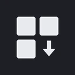
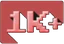
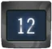
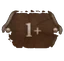

Σχετικά
Γεννήθηκα στην Αθήνα τον Φεβρουάριο του 1984. Εργάζομαι ως ηχολήπτης, είμαι ο δημιουργός των Ανεξάρτητες Εκδόσεις Γλαρόλυκοι και δηλώνω -αυθαίρετα- συγγραφέας και χομπίστας μουσικός. Είμαι υποστηρικτής της ανοικτής κουλτούρας και των ελεύθερων αδειών χρήσης, καθώς και αρωγός σε δράσεις για την προώθηση των τεχνών και του πολιτισμού. Στον ελεύθερο χρόνο μου σχεδιάζω ιστοσελίδες και διάφορες χρήσιμες (ή όχι και τόσο χρήσιμες) εφαρμογές. Φτιάχνω και τέσσερα δωρεάν projects ανοικτού κώδικα: το orOS, ένα λειτουργικό σύστημα στον browser, τα NULL JSFX, πρόσθετα ήχου για μίξη, το Noxpress, plugins για WordPress και WooCommerce, και το Waymark, εργαλεία για ηχοληψία και συνέδρια, που είναι ακόμα σε ανάπτυξη.

Για Android 8+ · δωρεάν, χωρίς Google
Εφαρμογές Koulaxizis
Όλες μου οι εφαρμογές για κινητό σε ένα μέρος: orOS, NULL JSFX, Noxpress και Γλαρόλυκοι. Τις εγκαθιστάς με ένα πάτημα και ενημερώνονται μόνες τους, όλες υπογεγραμμένες από εμένα.
λήψεις των Εφαρμογών Koulaxizis
λήψεις των εφαρμογών μου για Android, από όλα τα κανάλια
εγκαταστάσεις και ενημερώσεις μέσα από τις Εφαρμογές Koulaxizis
Βιβλία
- 2026 Ιστορίες από τη λύπη
- 2023 Το Κορίτσι
- 2022 Ποιήματα Θανάτου
- 2021 Λάκυ το αδεσποτάκι
- 2021 Ο κυρ-Φώτης
Όλα τα βιβλία μου κυκλοφορούν αποκλειστικά από τις Ανεξάρτητες Εκδόσεις Γλαρόλυκοι σε ψηφιακή και έντυπη μορφή. Μπορείτε να τα βρείτε στο κατάστημα των εκδόσεων ή να τα ζητήσετε σε οποιοδήποτε βιβλιοπωλείο.
Μουσική
Η μουσική μου είναι διαθέσιμη για ακρόαση σε όλες τις ψηφιακές πλατφόρμες μουσικής. Ενδεικτικά, βρείτε με στα:
Όλα τα μουσικά έργα μου κυκλοφορούν από τη δισκογραφική των Ανεξάρτητες Εκδόσεις Γλαρόλυκοι.
Βίντεο
Άρθρα & Συνεντεύξεις
Συνεντεύξεις
- 03/12/25 Καλό βιβλίο είναι αυτό που μιλά στην ψυχή του αναγνώστη
- 12/09/25 Η «χημεία» είναι χρήσιμη, αλλά όχι οπωσδήποτε απαραίτητη
- 07/03/23 Ο Χρήστος Κουλαξίζης στο Εργαστήρι του συγγραφέα
Αναφορές
Σχεδιασμός
Ιστοσελίδες
-
koulaxizis.gr
Προσωπική σελίδα & portfolio.
HTML5 CSS3 Vanilla JS PWA
-
Γλαρόλυκοι
Επίσημος ιστότοπος εκδόσεων.
WordPress WooCommerce PHP E-commerce
-
Lexifly
Υπηρεσίες επιμέλειας κειμένων.
HTML5 CSS3 Single Page Responsive
-
TheBabyLand
Κατάστημα ειδών μητρότητας.
WordPress WooCommerce PHP E-commerce
-
FrigoPlus
Συστήματα ψύξης & κλιματισμού.
HTML5 CSS3 GitHub Pages Open Source
Web Apps
-
Glarolykoi App
Android Application (10+ downloads).
Kotlin Android Jetpack
-
orOS
Στατικό λειτουργικό σύστημα στον browser. Δουλεύει και χωρίς internet και τα δεδομένα μένουν στη συσκευή σου.
Open Source Privacy-First PWA Android (F-Droid)
Εφαρμογές
-
Noxpress
Οικοσύστημα WordPress & WooCommerce plugins.
1.688 λήψεις στο GitHub · 19/11/2026
WordPress WooCommerce PHP Open Source Beta
-
NULL JSFX
Δωρεάν πρόσθετα ήχου για μίξη, για το Reaper και κάθε DAW.
4.341 λήψεις στο GitHub · 19/11/2026
JSFX VST3 / CLAP LV2 Open Source
-
Waymark
Δωρεάν εργαλεία για ηχοληψία, οπτικοακουστικά και συνέδρια. Τρέχουν τοπικά και offline, χωρίς εγκατάσταση. Πρώτο εργαλείο: Waymark Remote.
Portable Offline Open Source Σε σχεδιασμό
Προϊόντα
Merchandise
- Unisex T-Shirt Περήφανο Αδέσποτο Σκυλί →
- Unisex T-Shirt Ψυχοσωματικά →
- Unisex T-Shirt Θα ανατέλλω →
- Unisex T-Shirt Στο όνομα της τέχνης →
- Unisex T-Shirt orOS →
- Unisex T-Shirt Waymark →
Όλα τα προϊόντα κυκλοφορούν από τις Ανεξάρτητες Εκδόσεις Γλαρόλυκοι.
T-shirt, κούπες και αυτοκόλλητα των δωρεάν orOS, NULL JSFX, noxpress και Waymark, μια εφάπαξ δωρεά ή μια δουλειά για μένα: Στήριξε τα δωρεάν projects · Συνεργάσου μαζί μου. Δεν ξεκλειδώνουν τίποτα· τα projects μένουν δωρεάν.
Σύνδεσμοι
-
Cockos Reaper
— Αποθετήριο με custom presets για το DAW Reaper
⭐ 80 stars / 🍴 15 forks / 👁 6 watch -
Scribus
— Πρότυπα σελιδοποίησης για το Scribus, όπως τα χρησιμοποιώ στα βιβλία και τα περιοδικά των Γλαρόλυκων
⭐ 3 stars / 🍴 1 fork -
GitHub
— Το προφίλ μου και τα achievements που έχω κερδίσει
🏆 6 achievements -
Metabook
— Μεταχειρισμένα βιβλία προς πώληση (συχνή ενημέρωση)
⭐⭐⭐⭐⭐ 5.0/5.0 stars / 10 reviews -
Vinted
— Μεταχειρισμένα αντικείμενα προς πώληση
⭐⭐⭐⭐⭐ 5.0/5.0 stars / 3 reviews -
OpenStreetMap
— Συμμετοχή μου στον ελεύθερο χάρτη του κόσμου
🗺️ 1.582 επεξεργασίες / 1.893 σημειώσεις -
Steam
— Το προφίλ μου και τα εμβλήματα που έχω ξεκλειδώσει
🎮 Επίπεδο 21 / 10 εμβλήματα


-
Domains
— Ονόματα χώρου προς πώληση
tablogames.online / soffitta.site
Επικοινωνία
Email: koulaxizis@glarolykoi.net
Call/SMS/Viber: 698 4170 256
Οι ενημερώσεις μέσω RSS: feed.xml
Κάρτα επαφής: αποθήκευση επαφής
Υπηρεσίες: Συνεργάσου μαζί μου
Μοιράσου τη σελίδα μου με φίλους που θα τη βρουν ενδιαφέρουσα ή με εχθρούς που θέλεις να σπαταλήσουν τον πολύτιμο χρόνο τους άσκοπα. Όπως και να 'χει, sharing is caring!